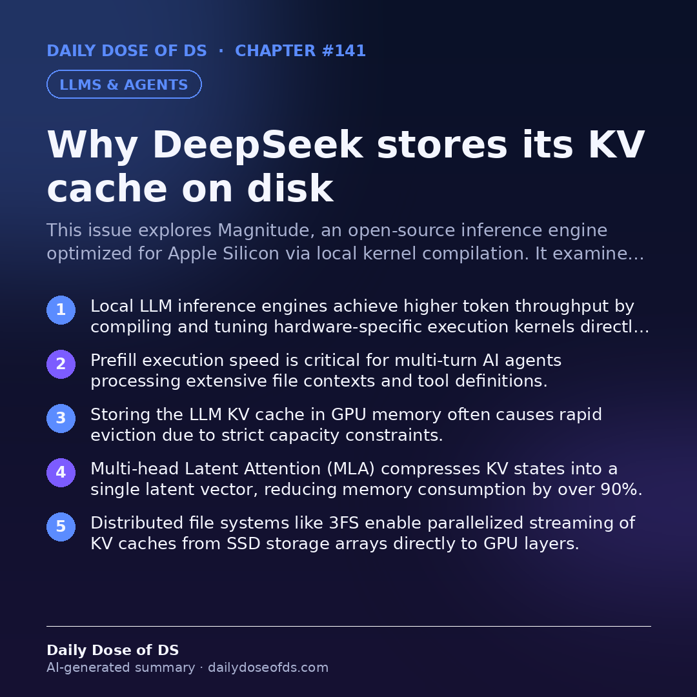

This issue explores Magnitude, an open-source inference engine optimized for Apple Silicon via local kernel compilation. It examines DeepSeek’s innovative strategy of storing compressed KV caches on distributed SSD infrastructure using MLA and 3FS. Finally, it breaks down the mechanics and optimization benefits of the early exaggeration parameter in t-SNE dimensionality reduction.
01 /Overview
Optimizing Large Language Model (LLM) performance requires addressing bottlenecks across hardware execution, memory access, and mathematical representation. Traditional local inference engines rely on prebuilt kernels that represent a compromise across diverse GPU architectures, failing to fully leverage localized hardware capabilities. Modern engines address this by compiling and tuning execution kernels directly on the target machine to maximize token generation speeds.
Beyond raw compute speed, memory architecture remains a primary constraint for long-context interactions and multi-turn AI agents. Because standard Key-Value (KV) caches consume vast amounts of memory, scaling context windows efficiently demands architectural shifts in how caches are stored and retrieved. By combining compressed latent attention representations with distributed file systems, architectures can bypass GPU memory limitations entirely, streaming prompt states directly from solid-state storage.
Finally, visualizing high-dimensional representations requires robust non-linear dimensionality reduction algorithms like t-SNE. Understanding the underlying optimization mechanics—such as probability distribution mapping and divergence minimization—allows data scientists to tune parameters effectively. Techniques like early exaggeration ensure that clusters remain distinct and well-separated during initial optimization phases, preventing local minima traps.
02 /Optimizing Local LLM Inference via On-Device Kernel Compilation
Prebuilt inference engines often underperform on consumer hardware because their underlying kernels are tuned in advance. A kernel is a low-level GPU program responsible for executing matrix multiplications and attention steps. Because Apple Silicon and other modern architectures vary significantly in core count and memory bandwidth, static prebuilt engines must rely on a generalized compromise configuration that is rarely optimal for any specific chip.
Engines like Magnitude solve this limitation by shifting kernel compilation to the user's local machine. When a model is downloaded, the engine compiles and tests multiple kernel configurations, dynamically retaining the variant that delivers maximum performance on that specific hardware. Additionally, this approach pairs models with optimized speculative decoding drafters to accelerate token generation per forward pass, significantly improving prefill and decode speeds for developer workflows and concurrent autonomous agents.
03 /DeepSeek KV Cache Architecture and Distributed SSD Storage
During LLM generation, the model computes and stores keys and values for every token across all attention layers, known as the KV cache. Reusing this cache for repetitive prefixes—such as system prompts or previous dialogue turns—bypasses expensive prefill computations. Traditionally, engines store this cache in scarce GPU memory to ensure fast access speeds, which frequently leads to rapid eviction and low cache-hit efficiency.
DeepSeek overcomes the memory limitation by combining Multi-head Latent Attention (MLA) with a distributed file system called 3FS. MLA compresses the KV cache into a single latent vector per token per layer, reducing the total cache footprint by over ninety percent. This compact cache size makes it viable to store petabytes of prefix states across thousands of solid-state drives simultaneously, streaming data directly to host memory and GPU layers in parallel during request execution.
04 /Mechanics of Early Exaggeration in t-SNE
t-SNE projects high-dimensional data into low-dimensional spaces, typically two dimensions, by modeling data points as probability distributions. In the high-dimensional space, Euclidean distances are converted into Gaussian probabilities representing neighborhood densities. The algorithm then initializes random low-dimensional points and matches their corresponding distribution using Kullback-Leibler (KL) divergence as a loss function, minimized iteratively via gradient descent.
The early exaggeration parameter multiplies high-dimensional probabilities by a constant factor greater than one during the initial optimization phase. Because the KL divergence loss function forces the low-dimensional distribution to match the exaggerated target probabilities, the optimizer learns larger attractive forces between neighboring points. This mechanism creates tightly packed, highly distinct clusters and prevents the optimization process from getting trapped in suboptimal local arrangements.
import numpy as np
def compute_kl_divergence(p: np.ndarray, q: np.ndarray, eps: float = 1e-12) -> float:
"""
Computes the Kullback-Leibler divergence between two probability distributions P and Q.
KL(P || Q) = sum(P(x) * log(P(x) / Q(x)))
Parameters:
- p: True high-dimensional probability distribution array.
- q: Low-dimensional approximating probability distribution array.
- eps: Small constant to prevent division by zero or log of zero.
"""
p = np.clip(p, eps, 1.0)
q = np.clip(q, eps, 1.0)
return np.sum(p * np.log(p / q))
# Example usage with uniform probability distributions
p_dist = np.array([0.4, 0.4, 0.2])
q_dist = np.array([0.3, 0.5, 0.2])
loss = compute_kl_divergence(p_dist, q_dist)
print(f"Calculated KL Divergence Loss: {loss:.4f}")05 /Key takeaways
- Local LLM inference engines achieve higher token throughput by compiling and tuning hardware-specific execution kernels directly on the user's machine.
- Prefill execution speed is critical for multi-turn AI agents processing extensive file contexts and tool definitions.
- Storing the LLM KV cache in GPU memory often causes rapid eviction due to strict capacity constraints.
- Multi-head Latent Attention (MLA) compresses KV states into a single latent vector, reducing memory consumption by over 90%.
- Distributed file systems like 3FS enable parallelized streaming of KV caches from SSD storage arrays directly to GPU layers.
- The early exaggeration parameter in t-SNE inflates high-dimensional probabilities to form tight, well-separated low-dimensional clusters.
06 /Interview questions
07 /Further reading
- Advanced Speculative Decoding Strategies and Drafter Selection
- Distributed File Systems for High-Throughput AI Workloads
- Mathematical Foundations of Kullback-Leibler Divergence and Gradient Descent
- Quantization Techniques for Optimizing Large Language Model Memory Footprints
08 /Chapter infographic
A one-glance summary of this chapter. Save it and share what you learned.
